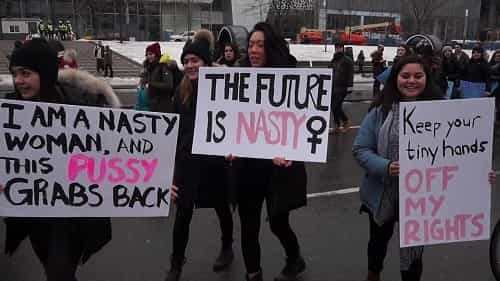
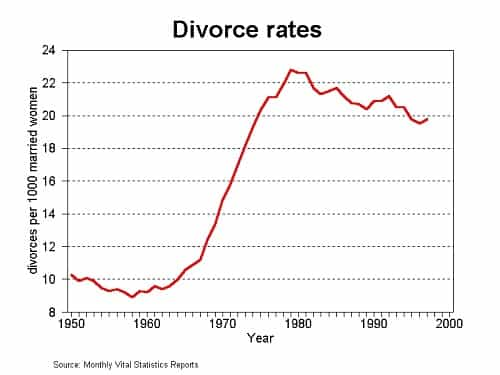

is an aspiring philosopher king, living the dream, travelling the world, hoarding FRNs and ignoring Americunts. He is a European at heart, lover of Latinas, and currently residing in the USA.


I attended one of the 673 women’s marches held worldwide on Saturday, January 1st, as an observer. What I saw was a mix of vague dislike of President Trump, pro-female sexist messages, a fear of end to legal abortion, black lives matter, pro-gay messages, and a glorification of women being nasty, aggressive, and masculine.
Many signs promoted nastiness. Sadly, it was not sarcasm.
For a straight single male, the pro-nastiness message was one of the most disturbing. Here were hordes of women, openly pledging and vowing and proudly proclaiming an unattractive, antisocial trait. I’ve never been to a slutwalk or fat acceptance protest, but I expect it’s a similar sentiment: the feeling of revulsion at a female contorting herself to proclaim something which makes her disgusting and unattractive to you.
The “nasty” slogan comes from the final presidential debate in October, 2016, when Trump referred to Hillary Clinton as “a nasty woman.” While Trump himself has been called as much or worse, you don’t see male Trump supporters openly supporting the idea of being a rapist, or tax evader, or being “poor?”
No he’s not.
Good men do not glorify negative or antisocial traits because we have self respect, and wish to better ourselves. Human beings, as social animals, care about what others think of them. It’s one thing to give up—to say, I cannot be anything better than a fat slob who cannot cook or live a healthy life, and must rely on a make-work HR job or outright welfare. But it is entirely another to be proud of your failures. We have truly entered strange times when women are openly bragging of their negative features.

They are proud to be fat and flabby. They are proud to be slutty. They are proud to be angry. They are proud to be nasty. Bring back a man from just 50 years in the past, and he would be completely flabbergasted. Prior to a few years ago, women zealously guarded their reputation, their image, and their bodies.
In the past, women were afraid of word spreading of their low value if they had too many sexual liaisons. They were afraid of aging, and used a variety of clothing, makeup, hair treatments, and push up bras to maintain the fertile image of their newly pubescent bodies. More often than not, even in the liberated west, they preserved their virginity for marriage.
But today, women not only don’t try to stress their positives, they sell you on their degeneracy and unattractiveness. Indeed, seeing women and girls of all ages proclaiming their nastiness made me seriously question wanting to live in the society this is becoming.
Self-hating cuck with shit eating grin
One of the universal fears held by the protestors is a change in the legality of abortion under a Trump administration. My opinion has long been agnostic: I am not a woman so I don’t have an opinion one way or another about how women handle unwanted pregnancy, much as I couldn’t care less what a woman thinks about what type of diet I eat, what my gym schedule is, or whether I’m manspreading. It is simply irrelevant.
For those who want to concern troll and force a woman to have a child against her will, well, you’d better be prepared to stand there monitoring her for the next 30 years, because she’s not going to stop making bad choices once the child is born, and will be greatly increasing the odds that the child will be a degenerate, welfare recipient, or likely a criminal, causing real harm to honest, law abiding productive citizens, perhaps stealing their property, or raping or killing them. If you’re not prepared to ensure she makes all the right choices so that doesn’t happen, don’t tell her to become a mother when she doesn’t want to. And yeah, sure, not all single moms.
On a micro level, I’m glad women have the ability to end pregnancy. There are many groups, including welfare recipients, teenagers, the unemployed, and sex workers, among others, who are, as Trump would say, “not the best and brightest.” Society greatly benefits from them not reproducing. These groups also tend to have the highest rates of reproduction. Also, single women, especially those we target for engaging in ONS recreational sex, would make horrible mothers, and should be discouraged from motherhood. Unrestrained, these groups will crowd out the productive classes; this is known as the Idiocracy Effect.
Quantity vs Quality
But on a macro level, one must really question the societal changes that abortion has caused. I’m not talking about the debate of where life begins: although I would argue life begins at birth, science does not provide a definitive answer and this can be debated ad nauseam. I’m talking about the societal effects caused by legal abortion. The behavioral, social, and cultural changes that it caused.
Green=unrestricted, yellow=health/social reasons only, red=life of woman only
Abortion was legalized in 1973 in America. According to the Center for Reproductive Rights, between 1950 and 1985, nearly all industrialized countries legalized abortion. Notable exceptions include Poland, Korea, Iceland, UK, and Finland, where it is legal only under certain circumstances.
At first glance, some generalizations can be made. Africa and Latin America, two regions that suffer from poverty and overpopulation, seem to be demonstrating the Idiocracy effect in action (quantity over quality) while almost the entire developed world, including China, Russia, US, and most of Europe, has unrestricted abortion.
Ireland is the only first world nation outlawing abortion, and due to Northern Ireland being under the legal jurisdiction of the UK, women can freely travel to Northern Ireland for abortion. The trend is clearly for legal abortion, and it is hard to see a reversal of this trend.
How has the availability of abortion affected social change? Throughout most of history, women remained chaste until marriage, with some risking sex with a small numbers of partners, but fear of the stigma of pregnancy kept most from acting on their desires. One night stands were almost unheard of, because the risk so greatly outweighed the reward for the woman.
If a woman really wanted to experience sex, she would seek a husband or at the very least a committed partner where she could have the appearance of being dumped by a scorned lover, if things ended in pregnancy badly. Often women would marry shortly after reaching fertility anyway, and even up until 1980, the average age for American women to marry was 22.
American average marriage rates <22 until Abortion legalized in 1973: Coincidence?
Banging sloots is fun, but remember they have been available throughout history in every civilization. It is only in modern times where they seem to be the majority. Was this caused, in part, by legal abortion? I would argue that the mere availability and acceptance of legal abortion has created a situation where women are more likely to ride the cock carousel, even if they never obtain an abortion themselves. The fear of judgement by others is gone, which was the main thing keeping women’s promiscuity in check.

When examining the history of divorce, we see an enormous increase in divorce which occurred in the 1970s, when abortion became legal in the US (remember, while it was legalized in all states in 1973, it was legal in some, and growing in support for several years prior). Also, keep in mind the apparent decline in divorce recently must be considered along with the fact that marriage rates are now at an all time low–many who would have married to later divorce are simply not marrying.
Again, the increase in divorces has less to do with abortion itself, rather than the culture that abortion created. When women were no longer as concerned about their self image, they began acting on their urges, as they could secretly sleep around, and if it resulted in pregnancy, whether she was married or single, she could secretly erase any evidence of her actions with an abortion.
Ronald Reagan’s no fault divorce law in 1969 was also a factor, and indeed abortion was merely one part of a culture that changed how women viewed relationships, marriage, and sex.
What is important is not how many of these women actually aborted a pregnancy; but the mindset that women now had about relationships, sex, self image, and her relationship to men which changed drastically. While most women will not have an abortion in their lifetime, most women have the mindset that she should act on her emotions, that promiscuity is good, and that she can secretly act on her desires if she feels like it, without being held accountable. This is the biggest sorrow of abortion.
As with any story, there are two sides. I believe the link between abortion and declining crime rates discussed in the book Freakonomics is causal. And the WHO has concluded legal abortion lowers the mortality rates for women, due to the removal of dangerous illegal abortions. While I don’t want the welfare mom in the projects or the teenage slut living down the street to reproduce, I also lament the destruction of American morality, the loss of honor, beauty, and a healthy dating market. American women have become the worst in the world, and this is a new development over the last decade.
In the end, the best policy towards abortion is likely the same as for homosexuality.
It should not be criminalized, but it should be somewhat shameful, not openly discussed, and never glorified.
While legal abortion is only one factor in the vast societal changes of the past 50 years, it has contributed negatively to sexual relations, family, loyalty, chastity, and morality. Men made the decision to legalize abortion in an attempt to empathize with and help women. The nasty, angry, proudly unpleasant and unattractive women it has created have none of my sympathy.
In his inaugural address, Trump outlined the economic failures in America. Real wages peaked in the 1960s, and America has been on the decline ever since. The same can be said of our moral and social condition. Women are afraid of losing some of their reproductive freedoms. While a rollback of legal abortion is unlikely, whatever moves the Trump administration takes in this area, it is hard to see any outcome but improvement.
Read More: Three Immigrants Allegedly Broadcast Their Rape Of A Swedish Girl Live On Facebook